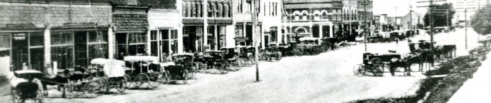

History

The city of Rexburg was founded in March 1883 when an intrepid group of pioneers decided to settle along the banks of the Teton River. They had been sent by church leaders in Salt Lake City, under the direction of Thomas E. Ricks, to settle the Upper Snake River Valley. The new community, named Rexburg after their leader (Ricks being German for Rex or King) quickly attracted men and women eager to bring industry and civilization to the West. By the time Idaho entered the Union as the 43rd state in 1890, Rexburg was the second largest city in the state.
The city fathers recognized education and commerce as essential ingredients to building a strong, family centered community. Before the end of their first year in the valley, while setting out to cultivate and irrigate the semiarid land, the city fathers found time to organize Bannock Stake Academy the first primary school in the area. In 1888, just five years after its initial settlement, civic and church leaders founded Ricks Academy, eventually becoming Ricks College (the largest private junior college in the US) and later (2001) Brigham Young University-Idaho, a four year liberal arts college.
Brigham Young University-Idaho is one of the fastest growing universities in the entire country. It attracts talented students from around the world to study, and this diversity adds to Rexburg’s culture. The University’s unique three-track system allows more students to attend the University while Rexburg benefits from the yearlong presence of the students. Student population for each track is nearing 15,000 a semester.
In addition to higher education, Rexburg boasts excellent elementary and high schools. Madison High School recently moved to brand new facilities; two new elementary schools Burton, and South Fork Elementary have increased total student capacity for Rexburg by 800 students. With a student to teacher ratio of 15:1 Rexburg is an ideal location to raise a family.
Set within an hours drive of two major National Parks, Yellowstone and Teton, Rexburg’s fishing, hunting, camping and outdoor recreation activities are year round. St. Anthony Sand dues are a nationally recognized, year round destination for off road enthusiasts.
As Rexburg enters the second decade of the twenty first century it is uniquely placed to take advantage of its location, people and limitless potential. Its location near interstate 15 and US Highways 20 and 33 make it a gateway to Jackson Hole, WY; Butte, MT; Sun Valley Idaho; and communities in between. Its educated workforce is willing and able to meet the expectations and challenges of an increasingly globalized marketplace.
Rexburg is a city located in Madison County Idaho. It is also the county seat of Madison County. With a 2020 population of 30,868, it is the 12th largest city in Idaho and the 1262nd largest city in the United States . Rexburg is currently growing at a rate of 2.44% annually and its population has increased by 21.13% since the most recent census, which recorded a population of 25,484 in 2010. Rexburg reached it's highest population of in . Spanning over 10 miles, Rexburg has a population density of 3,084 people per square mile.
The average household income in Rexburg is $46,244 with a poverty rate of 39.33%. The median rental costs in recent years comes to $717 per month, and the median house value is $211,700. The median age in Rexburg is 23.2 years, 23.8 years for males, and 22.3 years for females.
Rexburg Demographics
According to the most recent ACS, the racial composition of Rexburg was:
White: 91.17%
Two or more races: 3.28%
Other race: 2.85%
Asian: 2.08%
Native Hawaiian or Pacific Islander: 0.23%
Native American: 0.20%
Black or African American: 0.19%